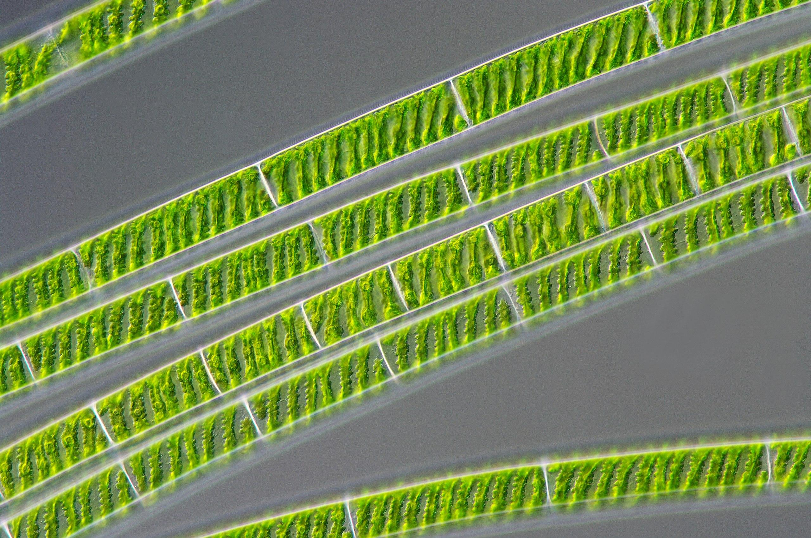
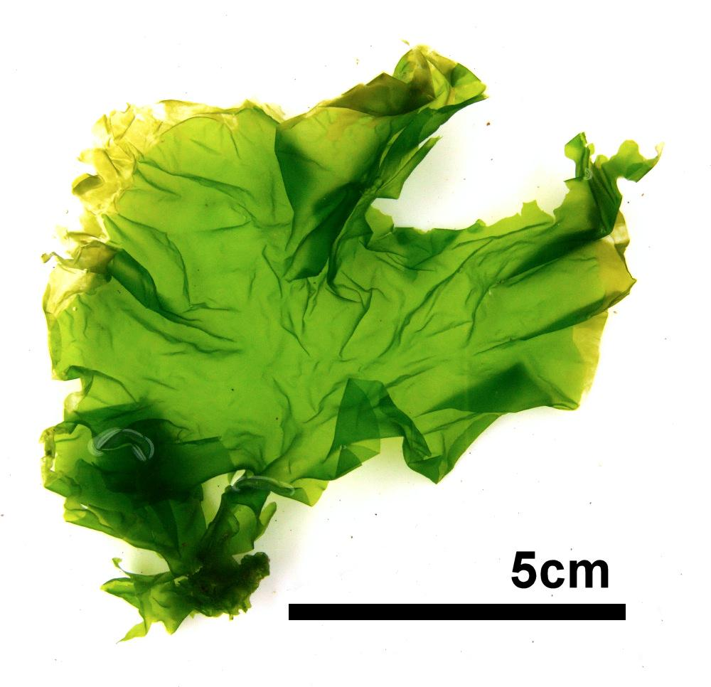
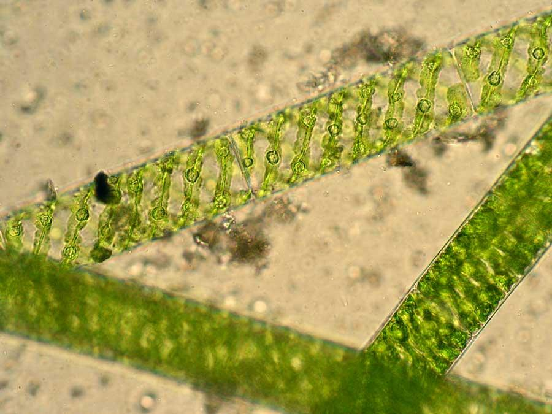
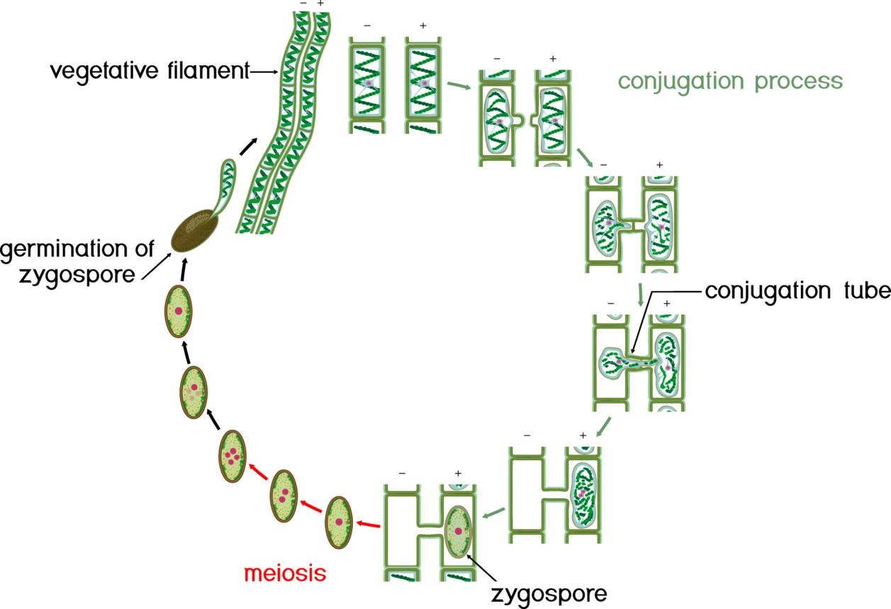

ALGUES



PROBLEME ET ADAPTATION
Les algues représentent le point de départ de notre parcours évolutif.
Elles vivent principalement dans les milieux aquatiques, où l'eau est disponible en permanence ou presque.
Elles n'ont donc pas eu besoin de développer les mêmes structures de protection contre la dessiccation que les plantes terrestres.
Certaines algues vertes présentent des caractéristiques qui permettent de comprendre l'origine évolutive des plantes terrestres.
APPAREIL VEGETATIF
Le corps végétatif des algues est généralement appelé thalle.
Les algues absorbent l'eau et les éléments minéraux directement par leur surface.
CYCLE DE REPRODUCTION

Chez Spirogyra, la reproduction peut être végétative par fragmentation ou sexuée par conjugaison.
Les cycles de reproduction varient cependant selon les groupes d'algues.